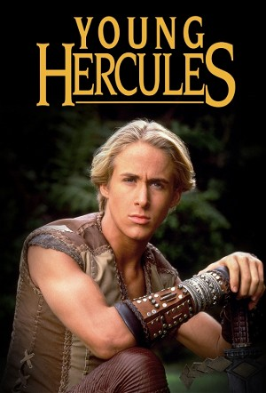

Young Hercules (1998)
ActionAdventureFantasy
| Year | 1998 |
|---|---|
| Rating | TV-PG |
| Status | Completed |
| Seasons | 2 |
| Episodes | 52 |
| Genre | Action, Adventure, Fantasy |
Follow teenage half-god/half-mortal Hercules and his friends, Iolaus and Jason, as they learn about life, love and friendship on their action-packed adventures and watch as they encounter Hercules' not-so-loving Olympian family and the consequences of such encounters.
Episodes
Specials
| # | Title | Air Date | Synopsis |
|---|---|---|---|
| 1 | Young Hercules - The Movie | 1998-02-24 | Alcmene, fearing she will lose her son, sends Hercules to Chiron's academy. Once there he meets up with Iolaus, a pain in the neck who he knew from his own village, Jason, The Crowned Prince of Corinth, and the female ca |
| 2 | Writing the Legend of Young Hercules | 2015-06-23 | The writers of Young Hercules, starring Ryan Gosling, reflect on writing for the syndicated series and writing for the legendary character. |
Season 1
| # | Title | Air Date | Synopsis |
|---|---|---|---|
| 1 | The Treasure of Zeus (1) | 1998-09-12 | With Ares' help, Strife masquerades at a student at the Academy, where he baits Hercules with the location of a chalice that once belonged to Zeus, his father. Hercules and his friends Iolaus and Jason attempt to retriev |
| 2 | Between Friends (2) | 1998-09-16 | Strife frames Iolaus for stealing money from Kora's in an attempt to get at Hercules and causes Hercules, Iolaus, and Jason to be at odds with each other. |
| 3 | What a Crockery (3) | 1998-09-17 | After Hercules stole Hera's chalice, he was freed from Zeus' protection which gives Ares the golden opportunity to kill his hated little brother. Ares uses Strife to lure Hercules to his mother Alcmene's house where he p |
| 4 | Girl Trouble | 1998-09-18 | Hercules, Iolaus, and Jason take a boat to Athens to find a new cook for the Academy, but they get more than they bargained for when they learn that the boat is transporting Amazons en route to a slave trader. |
| 5 | Herc and Seek | 1998-09-19 | Iolaus' old gang breaks into the Academy and holds Iolaus, Lilith, and Fiducius hostage. While Jason and the other cadets are outside trying to keep them from escaping, Hercules alone is inside trying to save the others- |
| 6 | Teacher's Pests | 1998-09-22 | Hercules, Iolaus, and Jason are all sent to detention, but Hercules and Jason must cover for Iolaus when he has to leave to start his new job at Kora's. |
| 7 | Inn Trouble | 1998-09-24 | The boys are left to watch the Inn when Kora takes off after Artemis asks her to help find the fruit that was stolen from her temple. Unfortunately trouble ensues when Strife and Discord drop by for a havoc-wreaking visi |
| 8 | Keeping Up with the Jasons | 1998-09-25 | After Hercules is bested in a practice sword fight by Jason, he asks Hephaestus to build him some new weaponry. Hercules's new sword and shield, are made from a metal that no other metal can harm and this power brings He |
| 9 | Amazon Grace | 1998-09-26 | The trio stumbles across the Amazons once again and this time they invite the ladies back to the Academy. Unfortunately when they get there, the King of Athens arrives, claiming the Amazons are his property. This revelat |
| 10 | Cyrano de Hercules | 1998-09-29 | Hephaestus, failing to gain the interest of the fairer sex builds a woman of his own, but his jealousy could endanger Hercules when the woman falls for him instead of the God of Steel. |
| 11 | Battle Lines (1) | 1998-10-01 | Hercules, Iolaus and Lilith are caught between friends when Discord and Strife pit Cyane's tribe and Cheiron's fellow centaurs against each other, with Cyane and Cheiron leading their armies into battle. |
| 12 | Battle Lines (2) | 1998-10-02 | With hatred growing and the facts distorted by lies manufactured by Discord and Strife, Hercules and his friends are running out of time to prevent a war that isn't necessary and to save two people Hercules cares about. |
| 13 | Forgery | 1998-10-03 | Tired of being called a wet blanket by his friends, Hercules requests the fire in Hephaestus's Olympian forge to make him more like his father. Although at first it seems to work, by making Hercules a much more laidback, |
| 14 | No Way Out | 1998-10-07 | Hercules takes Lilith on a field trip to divert her from the surprise party that the others are setting up but as usual trouble follows. A cave-in traps them and Ares attempts to manipulate Lilith into unknowingly poison |
| 15 | Ares on Trial | 1998-10-09 | After Ares attempts to kill Hercules yet again, he is put on trial by the Gods for violating Zeus's order of protection. Ares proceeds to claim he is innocent and asks Hercules to defend him, baffling Hercules, who reluc |
| 16 | Down and Out in Academy Hills | 1998-10-10 | Hercules, Jason and Iolaus rescue a drowning man after he literally falls from the sky. Funny thing is the man has no idea who he is or where he came from. Hercules soon discovers that the man is actually his half-brothe |
| 17 | Winner Take All | 1998-10-24 | Hercules alienates his friends when he abandons them during a competition called The Games to team up with his two new brothers, Pollux and Castor, who are the mortal sons of Zeus. Things get worse for Hercules when Poll |
| 18 | A Serpent's Tooth | 1998-10-29 | Discord and Strife, disguised as a Babylonian traveler and a Sybill give Jason a gift that turns out to be a baby monster, that Iolaus soon comes to adore. Unknown to the trio though is that the monster is capable of bur |
| 19 | The Lure of the Lyre | 1998-10-30 | A young minstrel, Orpheus and his girlfriend, Eurydice lure Hercules, Iolaus and Lilith into what they claim is a place where the party never ends run by Bacchus, the God of Partying and Good Times.In reality, they soon |
| 20 | Fame | 1998-10-31 | Orpheus and Eurydice, both reformed from their days as followers of Bacchus perform at Kora's in front of a sold out crowd. But unbeknowst to Eurydice, Orpheus has struck a deadly deal with Bacchus freeing him and Eurydi |
| 21 | Lyre, Liar | 1998-11-03 | Hercules and Iolaus meet up with Eurydice and Orpheus but when it's discovered that Orpheus still has the lyre, Eurydice promises Bacchus that she will become his bride if he agrees to leave the others alone. |
| 22 | A Lady in Hades | 1998-11-04 | Hercules and Jason travel to the underworld in an attempt to talk Hades out of sending Eurydice to Tartarus despite her service to Bacchus. Meanwhile, Jason is reunited with his father in the Elysian Fields. |
| 23 | The Mysteries of Life | 1998-11-05 | The trio discover that Ruff, their monstrous former pet, is being held by a freak show owner. When the ringmaster refuses to sell him, Iolaus and Hercules sneak in and free Ruff, who then escapes and runs rampant threate |
| 24 | Dad Always Liked Me Best | 1998-11-06 | Hercules meets Lucius, another mortal son of Zeus, who tells him that he is on the trail of Pollux on the request from Zeus himself to deliver Pollux to death on the crime of the death of Castor, their brother. Hercules |
| 25 | Herc's Nemesis | 1998-11-10 | Hercules meets Nemesis, the assassin of the Gods, and talks her out of blindly killing a mortal just because Hera tells her to. The two then fall victim to Hera who sends a replacement killer after both of them. |
| 26 | Cold Feet | 1998-11-11 | Jason has cold feet about his ability to lead Corinth and runs away, finding himself among a group of villagers terrorized by a warlord where he must play the hero and stop the bad guy. |
| 27 | Mommy Dearests | 1998-11-12 | In attempting to destroy Hercules by killing everyone he cares about, Lucius sets Alcmene's village on fire and then goes after Jason and it's up to Hercules to stop his half-brother. |
| 28 | In Your Dreams | 1998-11-13 | When Ares strikes a deal with Morpheus the god of dreams, he kidnaps the cadets and sends them into the dream world. Hercules must follow them to the dream realm,where he meets his worst fear, an alternate version of him |
| 29 | Sisters | 1998-11-18 | Kora's long lost sister Cleo shows up causing the green-eyed monster to show up in Kora, when her sister steals the spotlight. When Kora attempts to loosen up and be more like Cleo, she gets more than she bargained for w |
| 30 | Golden Bow | 1998-11-19 | Kora wins a bow that originally belonged to Artemis in an archery contest and plans to give it back to her. Hercules learns that Kora has been a servant of Artemis' after having been saved by the goddess years ago just w |
| 31 | Home for the Holidays | 1998-11-20 | Hercules takes his friends Iolaus, Jason and Lilith home to his mother's to celebrate the festival of Persephone. To his surprise he finds his mother not alone as he expected but instead with a handsome suitor named Capa |
| 32 | Cram-ped | 1998-11-24 | When Herc and the gang learn that Iolaus will be sent back to prison unless he passes an upcoming test, they attempt to help him by pulling an all-nigh cramming session in order to help him pass. |
| 33 | Con Ares | 1999-02-01 | Hercules and Iolaus set out with Jason to negotiate peace treaties between two kingdoms on the verge of war. On their way though they're sidetracked by Discord and Strife, who've been sent by Ares in order to distract th |
| 34 | Get Jason | 1999-02-02 | A shrewd politician hires an assassin to kill Jason before his coronation, in order to clear the path for himself to step in as king of Corinth. However, once Hercules learns of this plan he attempts to tell everyone but |
| 35 | My Fair Lilith | 1999-02-03 | When a king offers his daughter's hand in marriage as a gift to Jason for his coronation, he pleads with Lilith to masquerade as his bride rather than marry someone he doesn't know or love. The problem is that the prince |
| 36 | Hind Sight | 1999-02-04 | When Artemis's favourite creature, a Golden Hind, is spotted, Hercules and Kora team up to try to keep the beautiful and rare creature out of the fatal hands of the hunters who are tracking her, as well as keep her away |
| 37 | The Head That Wears the Crown | 1999-02-05 | On the eve of Jason's coronation, a monster ravages the countryside in order to extract revenge on Jason's father, for an attack made on her ten years before. Deciding on how to deal with the situation puts Jason and Her |
| 38 | Me, Myself and Eye | 1999-02-17 | After Hercules comes into possession of a mystical eye that allows the bearer to see into the future, the three blind women who share it, invoke Artemis's help into recovering it. The result curses his friends causing Ja |
| 39 | The Skeptic | 1999-02-22 | When a new cadet named Pythagrius claims he doesn't believe in the gods of Mount Olympus, Strife bets another god named Fatsus, that he can make the cadet believe in gods. Fatsus, who can only see prophecies of bad thing |
| 40 | Iolaus Goes Stag | 1999-02-23 | Iolaus attempts to prove to his uncle that has has what it takes to be a Hunter just like him and with Hercules and Jason in tow, he heads out on a deer hunt. When Iolaus goes after the Golden Hind though Artemis punishe |
| 41 | Adventures in the Forbidden Zone | 1999-02-24 | Hercules clashes with a new cadet named Theseus which starts out as a rivalry and ends up into a battle for survival when Theseus challenges Herc to a chariot race. The problem the race takes place next to the area known |
| 42 | The Prize | 1999-02-25 | Ares must enter a talent show at Kora's Inn when he learns that one of the prizes would complete his set of the Chronos stones, that enabled Zeus to defeat the Titans. The catch is a mortal must willingly give it to him, |
| 43 | The Beasts Beneath | 1999-02-26 | Hercules, Iolaus, Lilith, Theseus and fellow cadet, Marco, find themselves trapped in a large area of sand known as the Dune Sea. It's known as forbidden and for a reason too, since it is inhabited by sand sharks who hun |
| 44 | Parents' Day | 1999-03-02 | It's Parents Day at the Academy and Iolaus hires two actors to pretend to be his parents so his real ones don't find out how poor his grades are and to not be disappointed in him once again. Things get complicated fast w |
| 45 | A Life for a Life | 1999-03-08 | Ares kidnaps Cheiron and it is up to Hercules, Iolaus and Lilith to decipher the three clues Cheiron left in order to find him, but Ares is hoping they succeed, because he plans on Hercules trading his life for that of C |
| 46 | Under Siege | 1999-05-10 | When the Amazons attack the Academy with missile-like weapons forged by Hephaestus, it's up to Hercules to ensure that no one gets hurt and to figure out the real reason of the attack. The real threat is actually Ares, w |
| 47 | Mila | 1999-05-11 | Hercules and Iolaus meet up with a young Amazon named Mila who is searching for the father she never knew, which Ares thinks is a great opportunity. Ares claims that he is Mila's father in order to get her under his cont |
| 48 | Apollo | 1999-05-12 | When Hercules tells his half-brother Apollo that no one really likes him, they are just afraid of him and humor him, Apollo doesn't take it well. He becomes jealous of Hercules and his friends and attacks the Academy. |
| 49 | Ill Wind | 1999-05-13 | When Cyane falls ill, the Amazons seek out Hercules for his help. Amazon Queens have a special aura given to them by the Gods that allows them to communicate through a person's memories. Hercules must decipher how to cur |
| 50 | Valley of the Shadow | 1999-05-14 | Hercules, Iolaus and Theseus follow the advice of a mysterious old man and go hunting in an area rich with game. What they don't know, however, is that the area is Hera's Valley, which is protected by a dangerous monster |